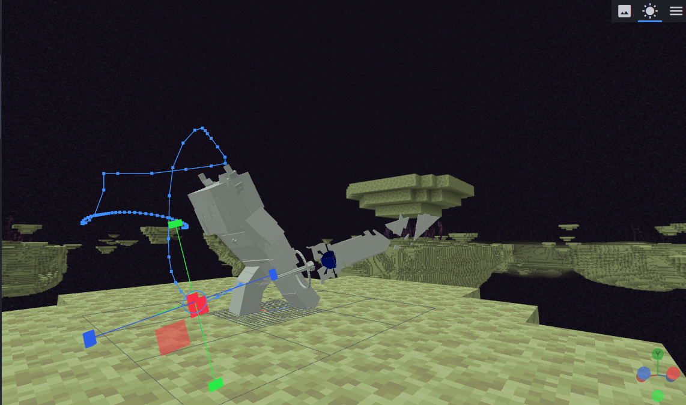
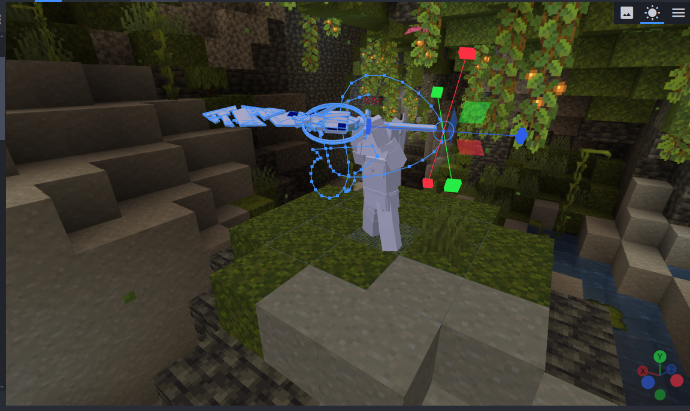
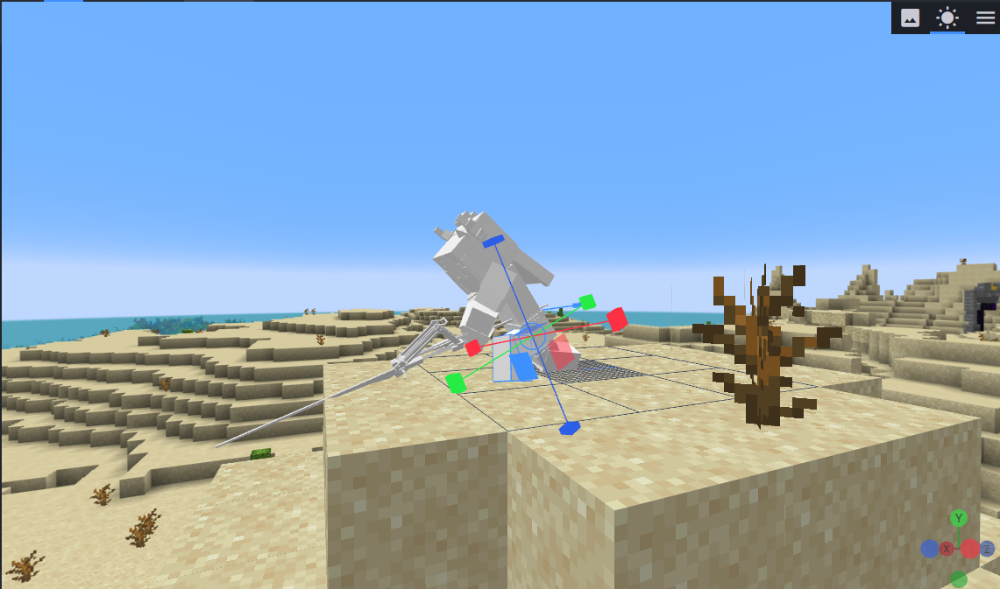

End Field
End field is a Minecraft JAVA server. The game is an MMORPG, and Endfield's art and worldview are inspired by the binary game Arknight.
I worked with the End Field project to provide modeling and module making guidance. There were a lot of characters in End field, and I modeled them and designed their actions.



The End Field team has also worked with MUR on several fan-oriented maps and mods.